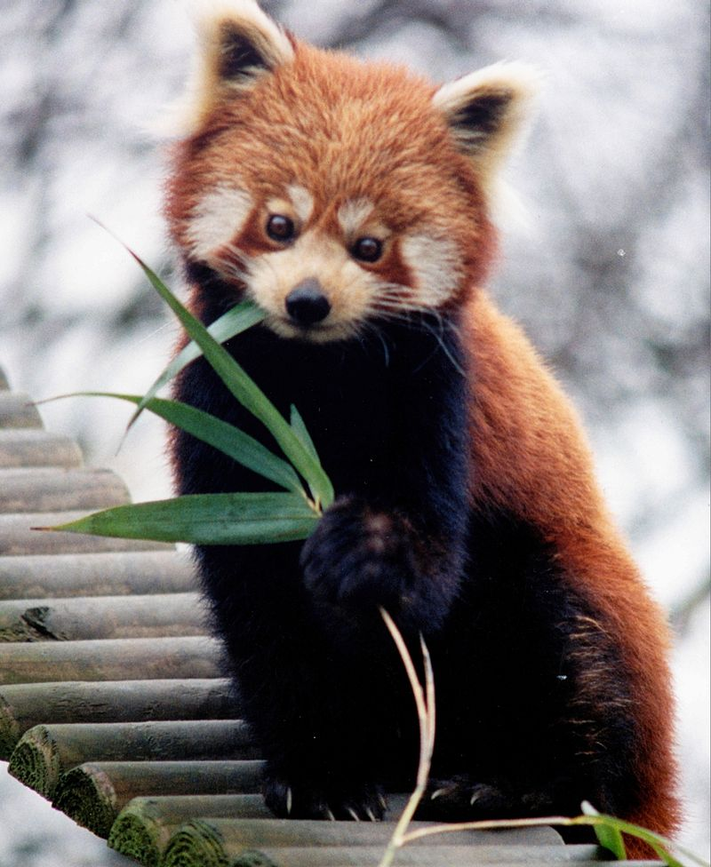

Red Panda
Red PandaDespre Red Panda
 Panda roșu (Ailurus fulgens) este o rudă de dimensiunea unei pisici a ratonilor și a dihorilor. Deși se credea că este o rudă a ursului panda, prin analize moleculare s-a constatat că nu face parte din familia urșilor. Este cunoscut și sub numele de „ursul pisică”, „pisica vulpe”, „vulpea de foc” sau „ratonul de Himalaya”. Capul și corpul măsoară până la 66 cm lungime, iar coada poate avea 50 cm lungime. Blana sa pufoasă are o culoare roșcat-castanie, cu pete albe pe față și inele negre pe coadă. Urșii panda roșii trăiesc în pădurile montane de la altitudini mari din Nepal, statul indian Sikkim, provinciile chineze Yunnan și Sichuan și Myanmar.
Hranire
Panda roșu consumă majoritar bambus. Precum ursul panda, nu poate digera celuloza, așa că trebuie să consume un volum mare de bambus pentru a supraviețui. Dieta sa este alcătuită din circa două-treimi bambus, dar include de asemenea fructe, ciuperci, rădăcini, ghinde, licheni, ierburi, și este cunoscut că își suplimentează dieta cu pui de păsări, pește, ouă, rozătoare mici, și ocazional insecte. În captivitate, ei consumă ușor și carne. Panda roșu este un excelent cățărător căutându-și hrana mai ales în copaci. Panda roșu nu face multe în afara hrănirii și dormitului din cauza conținutului caloric scăzut al hranei. Mugurii de bambus sunt mult mai ușor digerabili decât frunzele și prezintă cel mai înalt grad de digerabilitate vara și toamna, mai mic primăvara, și cel mai scăzut iarna. Aceste variații se coreleaza cu conținutul de nutrienți al bambusului. Panda roșu nu digeră complet bambusul, celuloza și componentele pereților celulari rămânând nedigerate. Aceasta implică faptul că digestia microbiană joacă doar un rol minor în funcția digestivă. Tranzitul bambusului prin intestin este foarte rapid (circa 2-4 ore). Pentru a supraviețui cu această dietă de proastă calitate, panda roșu selectează părți ale plantei de bambus care conțin nutrienți de înaltă calitate, cum ar fi frunzele fragede și mugurii în cantități mari (peste 1,5 kg de frunze proaspete și 4 kg de muguri proaspeți pe zi), care trec prin tubul digestiv destul de rapid, pentru a maximiza aportul de nutrienți (Wei et al., 1999). Studii din 2008 au arătat că panda roșu poate gusta îndulcitorii artificiali, precum aspartamul, fiind astfel singurul non-primat capabil de acest lucru.